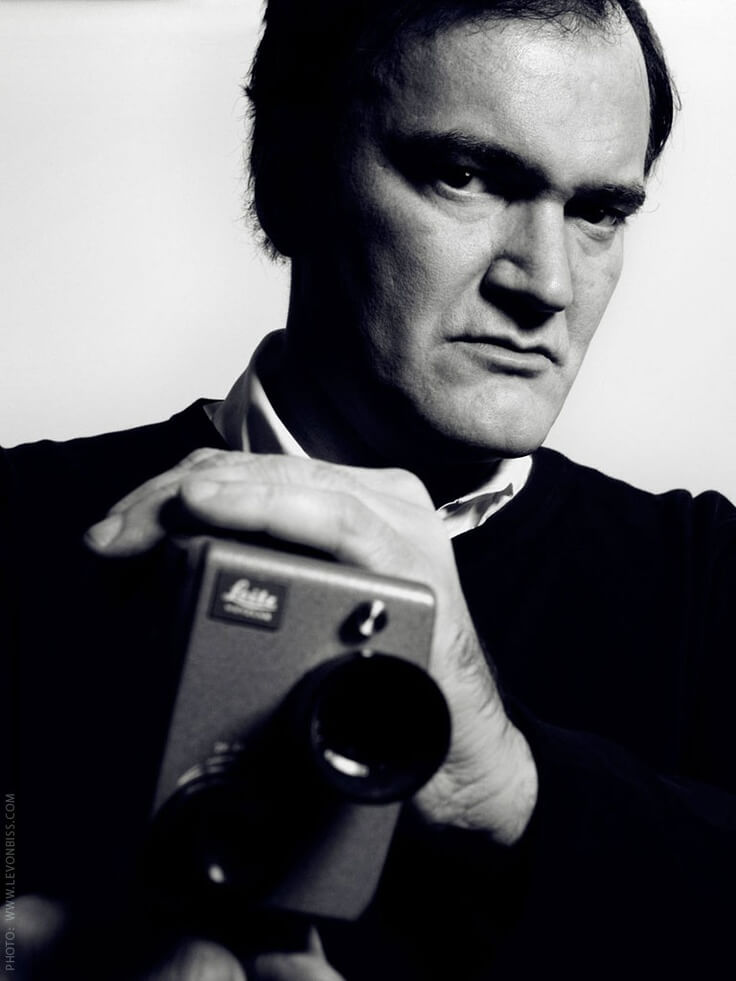
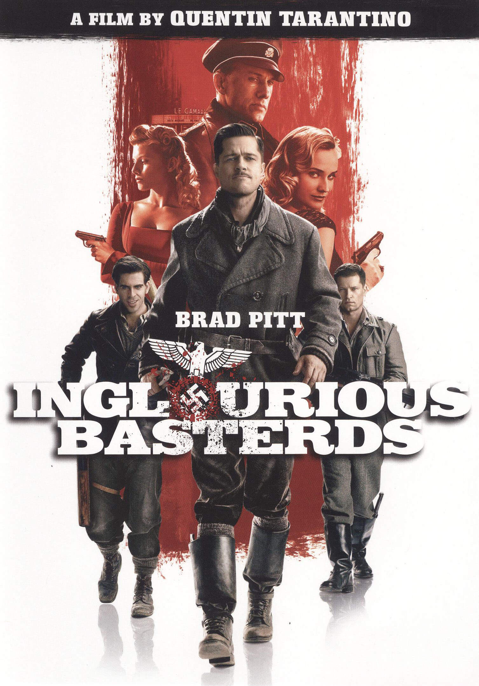
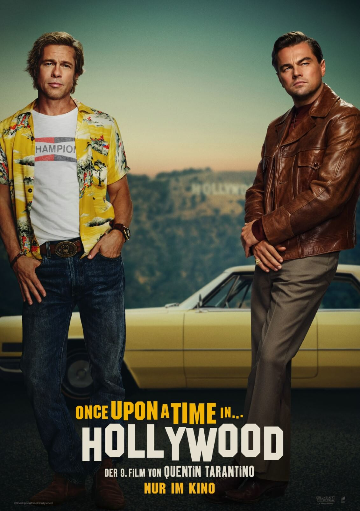

Квентин Джером Тарантино — американский кинорежиссёр, сценарист, актёр, кинопродюсер и кинооператор. Один из наиболее ярких представителей постмодернизма в кинематографе.
Родился 27 марта 1963 года, Ноксвилл, Теннесси, США.
Мировую известность получил после картины «Криминальное чтиво» (1994), которая принесла ему «Золотую пальмовую ветвь» Каннского кинофестиваля, а также премии «Оскар», «BAFTA» и «Золотой глобус» за лучший сценарий.
Тарантино обрёл первое рабочее место в качестве билетёра в одном из кинозалов в Торрансе, где крутили порно. Позже Квентин сказал:
«Большинство подростков думают: „Классно, я в порнокинотеатре!“ — Но мне не нравились порнофильмы. Мне нравилось настоящее кино, а не это — противное и дешёвое»
В 22 года Тарантино устроился на работу в «Видео-архив», пункт видеопроката на Манхэттен-Бич. Сам Квентин называет работу в «Видео-архиве» лучшей работой из всех, что он получал, пока не стал режиссёром.
Биография гения
Подробнее → Режиссёрская работа
10 главных фильмов Тарантино
-
Бешеные псы
Год: 1992
Жанр: драма, триллер, черная комедия
Длительность: 99 минут
Rotten Tomatoes: 91%
-
Криминальное чтиво
Год: 1994
Жанр: чёрная комедия, триллер, криминальный фильм, драма
Длительность: 154 минуты
Rotten Tomatoes: 92%
-
Джеки Браун
Год: 1997
Жанр: криминальная драма
Длительность: 154 минуты
Rotten Tomatoes: 87%
-
Убить Билла. Фильм 1
Год: 2003
Жанр: криминальный боевик, драма
Длительность: 111 минут
Rotten Tomatoes: 85%
-

Убить Билла. Фильм 2
Год: 2004
Жанр: криминальный боевик, драма
Длительность: 137 минут
Rotten Tomatoes: 84%
-
Доказательство смерти
Год: 2007
Жанр: фильм ужасов
Длительность: 109 минут
Rotten Tomatoes: 65%
-

Бесславные ублюдки
Год: 2009
Жанр: приключенческий, драматический, военный, альтернативная история
Длительность: 153 минуты
Rotten Tomatoes: 88%
-
Джанго освобожденный
Год: 2012
Жанр: спагетти-вестерн, драма, комедия
Длительность: 165 минут
Rotten Tomatoes: 86%
-
Омерзительная восьмерка
Год: 2015
Жанр: детективный вестерн
Длительность: 167 минут
Rotten Tomatoes: 74%
-

Однажды в... Голливуде
Год: 2019
Жанр: комедия-драма
Длительность: 161 минута
Rotten Tomatoes: 85%
Интересные факты
Из жизни режиссёра
-
У Квентина были романтические отношения со многими известными женщинами
Были слухи о его отношениях с Умой Турман, которые Тарантино опроверг,
сообщив, что у них только платонические отношения -
1 июля 2017 года Квентин обручился с израильской певицей Даниэлой Пик,
дочерью известного певца и композитора Цвики Пика
28 ноября 2018 года пара сыграла тайную свадьбу в Лос-Анджелесе
22 февраля 2020 года родился сын -
Согласно New York Post, однажды Квентин катался в автобусе,
заполненном женщинами и алкоголем, и, казалось, наслаждался этим
Затем он разместил всех в особняке на Голливудских Холмах,
где восседал на диване, окружённый женщинами -
Один из самых близких друзей Тарантино — режиссёр Роберт Родригес
Они сотрудничали во многих проектах, из самых заметных можно выделить
«От заката до рассвета», «Четыре комнаты», «Город грехов» и «Грайндхаус» -
На слухи о своём высоком IQ, равном 160, Тарантино ответил,
что его мать упомянула об этом в каком-то интервью, и он не знает, правда ли это - Квентин признался, что склонен к фут-фетишу (сексуальное влечение к ступням)
-
Ещё Тарантино очень любит компьютерную игру Half-Life
и рассматривает возможность экранизации этого шутера